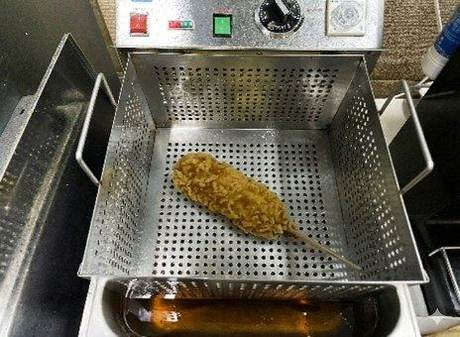
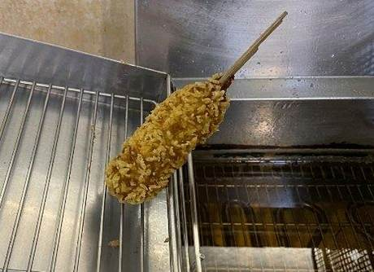
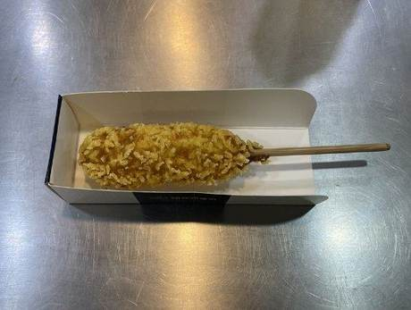
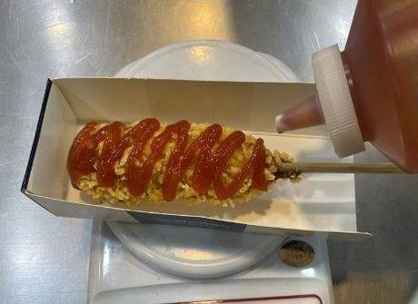
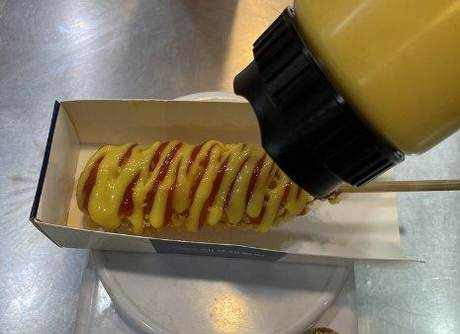
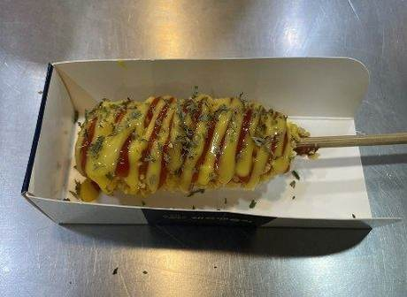

| 메뉴명 | 별크런치 핫도그 |
|---|---|
| 판매가격 | 2,500원 |
| 원재료 | 별크런치 핫도그, 케찹, 허니머스터드, 파슬리 |
| 사용 부자재 | 핫도그트레이 |
| 메뉴특징 | 별모양 튀김 빵가루를 입혀서 한입 한입 더 바삭하게 즐길 수 있는 추억의 감성 핫도그! |
조리방법

1
180도 튀김기에 냉동 별크런치 핫도그 1개를 넣고 4분간 튀긴다.
180도 튀김기에 냉동 별크런치 핫도그 1개를 넣고 4분간 튀긴다.

2
타이머가 울리면 핫도그를 꺼내어 30초간 기름을 충분히 털어준다.
타이머가 울리면 핫도그를 꺼내어 30초간 기름을 충분히 털어준다.

3
핫도그트레이를 조립한 뒤, 튀긴 핫도그를 담는다.
핫도그트레이를 조립한 뒤, 튀긴 핫도그를 담는다.

4
케찹 10g을 지그재그로 뿌려준다.
케찹 10g을 지그재그로 뿌려준다.

5
그 위에 허니머스터드 10g을 지그재그로 뿌려준다.
그 위에 허니머스터드 10g을 지그재그로 뿌려준다.

6
파슬리를 뿌려 완성한다.
(물티슈, 냅킨 함께 제공)
파슬리를 뿌려 완성한다.
(물티슈, 냅킨 함께 제공)
한꺼번에 많은 양을 튀길 경우, 튀김시간 30초~1분 더 늘려줄 것!